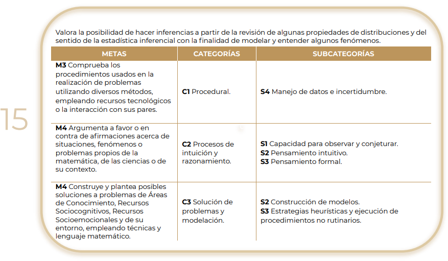

📢 Introducción a la Progresión 15

¡Bienvenidos a la Progresión 15! 🎯
En esta etapa, exploraremos cómo la estadÃstica inferencial nos permite hacer predicciones y modelar fenómenos a partir del análisis de datos y distribuciones. Aprenderás a comprobar procedimientos matemáticos, construir modelos y argumentar sobre fenómenos utilizando herramientas estadÃsticas.
A lo largo de esta progresión, desarrollarás habilidades clave como:
✅ Comprobar procedimientos matemáticos con recursos tecnológicos y trabajo colaborativo.
✅ Utilizar la estadÃstica inferencial para analizar incertidumbre y hacer predicciones.
✅ Argumentar sobre fenómenos matemáticos y cientÃficos con base en datos.
✅ Construir modelos matemáticos para solucionar problemas en distintos contextos.
🔹 ¿Por qué es importante la estadÃstica inferencial?
La estadÃstica inferencial nos permite extraer conclusiones a partir de datos, sin necesidad de analizar a toda una población. Se usa en áreas como:
📊 Encuestas y estudios de mercado para predecir tendencias.
🩺 Investigaciones médicas para evaluar la efectividad de tratamientos.
📈 Análisis financiero para estimar riesgos y tomar decisiones.
📌 Para comenzar, revisa la siguiente presentación y video, donde exploraremos cómo la estadÃstica inferencial ayuda a modelar el mundo que nos rodea.
📽️ Video: "¿Cómo predecir tendencias con estadÃstica inferencial?"
📊 Presentación: "Propiedades de distribuciones y su aplicación en la toma de decisiones"
💬 Después, participa en el foro inicial respondiendo la siguiente pregunta:
"Piensa en una situación donde necesitarÃas hacer una inferencia a partir de datos (ejemplo: predecir los resultados de una elección, estimar la demanda de un producto, analizar el desempeño de un equipo deportivo). ¿Cómo crees que la estadÃstica inferencial podrÃa ayudarte?"
📢 ¡Es momento de descubrir cómo los datos pueden predecir el futuro y mejorar la toma de decisiones! 🚀📊
Â